所有题目均在GRE官方网站给出，理论上可以考前全部看一遍。即便没时间每篇文章都写一下，也可以大概知道每篇文章的行文思路。
ISSUE一共有6种指令：
Write a response in which you discuss the extent to which you agree or disagree with the statement and explain your reasoning for the position you take. In developing and supporting your position, you should consider ways in which the statement might or might not hold true and explain how these considerations shape your position.
Write a response in which you discuss the extent to which you agree or disagree with the recommendation and explain your reasoning for the position you take. In developing and supporting your position, describe specific circumstances in which adopting the recommendation would or would not be advantageous and explain how these examples shape your position.
Write a response in which you discuss the extent to which you agree or disagree with the claim. In developing and supporting your position, be sure to address the most compelling reasons and/or examples that could be used to challenge your position.
Write a response in which you discuss which view more closely aligns with your own position and explain your reasoning for the position you take. In developing and supporting your position, you should address both of the views presented.
Write a response in which you discuss the extent to which you agree or disagree with the claim and the reason on which that claim is based.
Write a response in which you discuss your views on the policy and explain your reasoning for the position you take. In developing and supporting your position, you should consider the possible consequences of implementing the policy and explain how these consequences shape your position.
GRE的Issue部分由一个人工和程序同时打分，在这种情况下，我们应该以取悦ETS的判分程序为目标。
我们可以写的立场理论上只有三个：
部分认同
中立（不推荐）
部分不认同
理论上，中立也是可以写的，因为只要我们可以在Issue中体现出来我们对事情的正反两面都有所思考就可以。但是考虑到中立这种思想本身行文比较困难，所以不推荐以中立的态度写作。
五段论：
开头
反
正
升
结尾
具体如何操作：
如果说我们的立场是有保留地同意A
第一段：有保留地同意A
第二段（反）：先不写自己的观点，先让步，对方说的什么什么东西是有道理的
第三段（正）：但是我方的观点是更有道理的
第四段（升）：站在一个更高的角度，我们分歧的本质是什么，站在这个更高的角度，我来告诉你为什么我比你更有道理
第五段：虽然我同意对方的观点有道理，但是我依然认为我的观点更有道理
如何写好升：
上位词
关键词
根本原因
范文：
Some people believe that college students should consider only their own talents and interests when choosing a field of study. Others believe that college students should base their choice of a field of study on the availability of jobs in that field.
Which field to choose to study might be the most important decision a young man needs to make during his or her teenage. While some people believe that college students should consider only their own talents and interests when choosing a field of study on the availability of jobs in that field. However, in my opinion, talent and interest are more important when deciding which field to study.
It is true that students who choose a major based on job availability could have better returns. Students pursing the hottest fields will find a good job and lead a life of above the middle class. Today, the hottest college major is computer science. Upon graduation, students in the field can find a well-paid position in a high-tech company easily. They can be financially independent and become a winner envied by other people. Seen in this light, it is a wise choice especially for students from disadvantaged backgrounds.
However, for most students, they should choose a field they have great interest in because it is the only way they can exploit their full potential and become the people they really want to be. The story of Steven Jobs is familiar to everyone. He took a calligraphy course when he was a freshman, which had nothing to do with finding a good job. But it was the calligraphy course that enlightened him to design better fonts for computers and ultimately impressed clients of Macintosh. If Jobs merely sought employment, he would never enter the class of calligraphy. The Apple we appreciate today would not exist at the very beginning.
The key to find a solution to the long-time dilemma between interest and money is how to understand the role of higher education in today’s world. What is the essence of higher education? What is the ultimate goal of a higher education institution? People have conflicting opinion on it. Though some people may argue that universities should make qualified workers for society, I agree with the old motto: higher education is to enrich one’s soul and make him or her find the true self. A student chases job opportunity is short-sighted because we all know work only takes 1/5 of out life time and what is popular today may be outdated when you graduate. Moreover, the development of online education and vocational education provides many opportunities for students to receive vocational training besides college study, but you will find no place than a college to let you understand what you love and who you want to be.
To sum up, although I admit job availability is an important indicator when choosing a field to study, interest and talent should play a more important role in students’ decision.
换对象
开头
对象A
对象B
对象C
结尾
也可以在写作途中修改为：
开头
对象A
对象B
升华（并不是具体情况具体分析，而是要给出自己的清晰的立场）
结尾
这也可以看作是一种“反正升”和“换对象”的结合
在中间段按照不同元素进行分类：
发达国家、发展中国家
年轻人、老年人
经济、环境
时间、金钱
老师、学生
理工科、人文社科
claim
reason
evidence
诉诸常识
根据最高频的topic准备例子，刷题班也有部分准备好的例子。
教育
科技
艺术
环保
政治
反过来说明
正过来说：
经济发展对一个国家的发展是至关重要的。经济发展得好，就业率会提高，消费也会上升，从而形成良性循环。
反过来说：
经济发展对一个国家的发展是至关重要的。经济发展得不好，就业率会下降，消费也会下降，从而形成恶性循环。
换对象
在中间段按照不同元素进行分类：
发达国家、发展中国家
年轻人、老年人
经济、环境
时间、金钱
老师、学生
理工科、人文社科
例证
一个例证的中间段可以包含以下三个内容：
claim
reason
evidence
诉诸常识：
TP：学生不应该以工作为导向选择专业 Appeal to common sense
Awful: 学生不应该以工作为导向选择专业，因为我妈是这么说的。
Bad: 学生不应该以工作为导向选择专业，因为我身边有几个同学都选择了自己不喜欢的专业，他们很后悔。
Good: 学生不应该以工作为导向选择专业，因为以工作为导向很容易让学生丧失学习热情，增加学习压力，导致他们表现不佳。在每一所大学都会见到这样的学生，因为现在CS最热门所以选择了这个专业，但他们不喜欢编程，认为编程很枯燥，所以学习非常痛苦，在职场上也没有竞争力，最后虚度大学四年时光。
TP: 政治家不应该盲目服从选民的意见。
政治家不应该盲目服从选民的意见。因为选民的看法十分容易受限于他自己的立场和他能获得的信息，他在做决策的时候几乎只考虑到自己或自己身边人的利益。与之对比，政治家可以咨询专业人士，可以获得内部信息，他们理应站在更高的角度为全社会做出合理的判断。例如，选民经常会认为花钱在科研或太空探索项目上是浪费，更希望钱花在教育、医疗这样的领域。但政治家应该意识到，投资科研和太空项目可以带来长期利益，可以增加国家的竞争力。因此，一味强调政治家服从选民意见可能损害全社会的利益。
举例子一定要举和西方背景比较接近的例子，因为判卷的人都是西方人。
反证
反过来说明
正过来说：经济发展对一个国家的发展是至关重要的。经济发展得好，就业率会提高，消费也会上升，从而形成良性循环。
反过来说：经济发展对一个国家的发展是至关重要的。经济发展得不好，就业率会下降，消费也会下降，从而形成恶性循环。
The advancement of technology should not be achieved at the cost of privacy protection. If privacy gives way to technological development, we will live a life full of risks and uncertainties. Our credit cards may be abused; our personal informational may be sold; our safety may be threatened.
引证
也就是用名人给自己背书，但是需要准备好例子，同时也要记清楚人名。准备时间不够的同学可以不使用例证的方法。
根据最高频的topic准备例子：
教育
科技
艺术
环保
政治
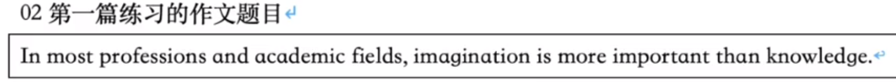
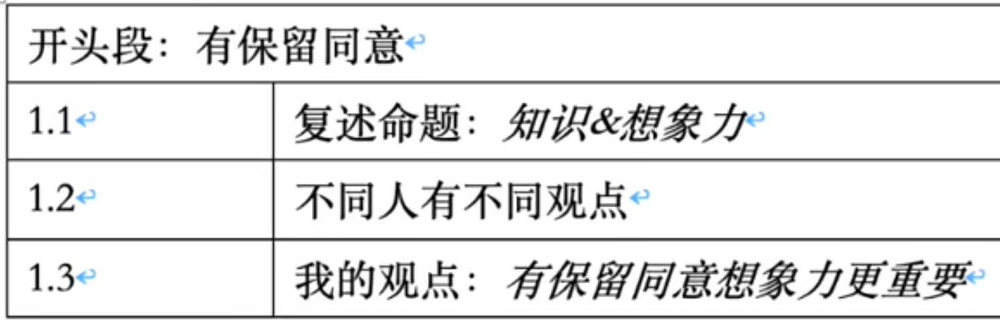
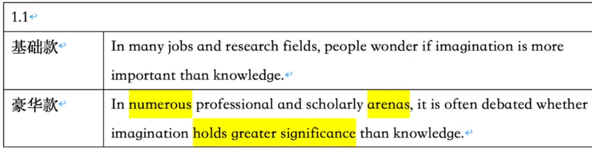
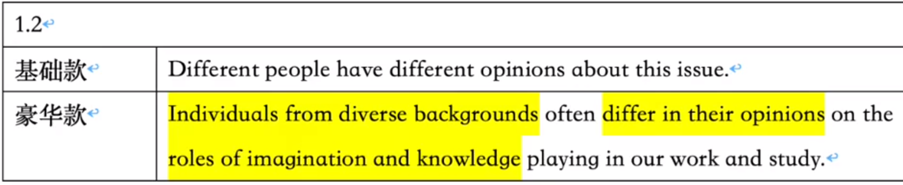
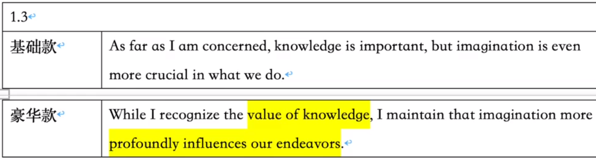
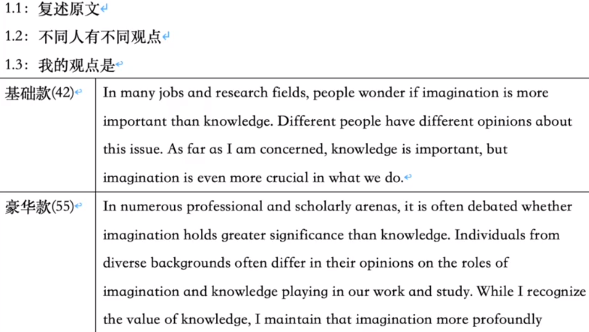
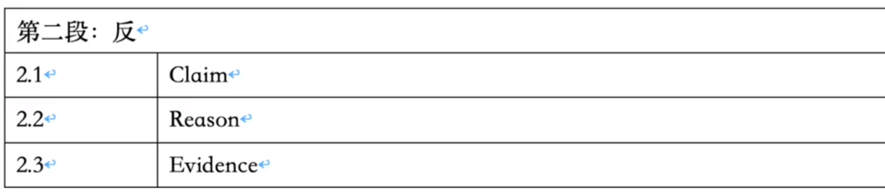
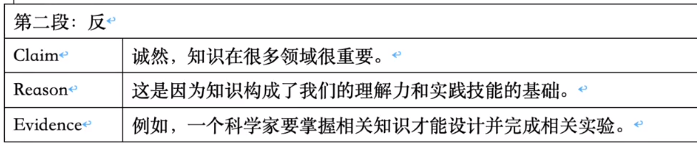
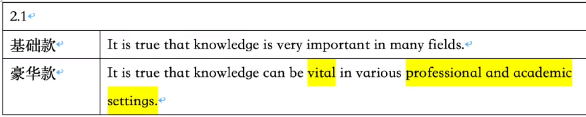
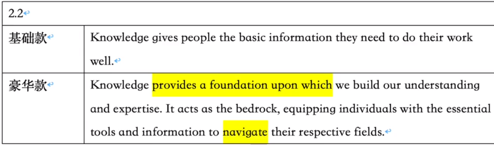
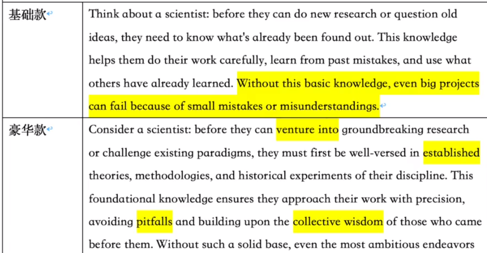
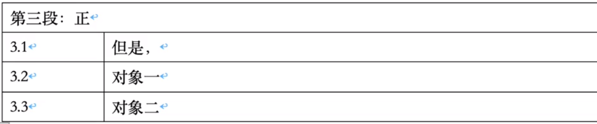
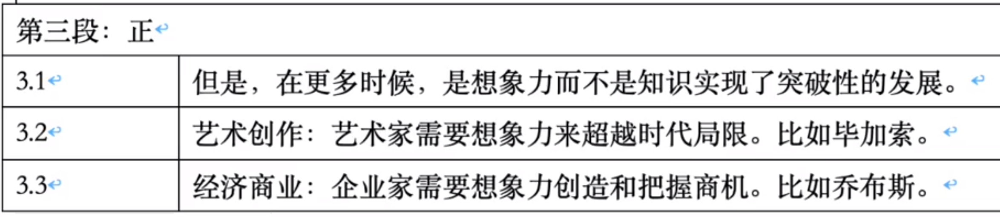
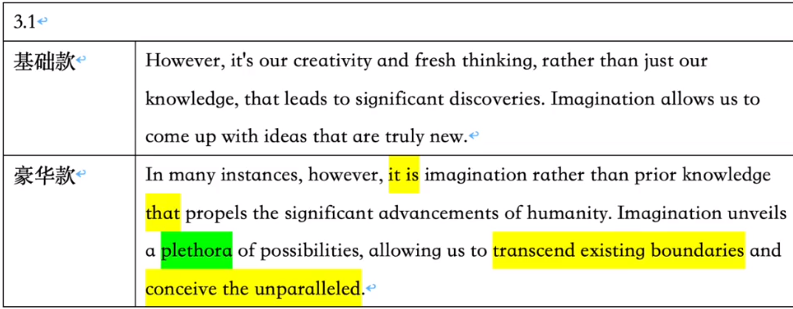
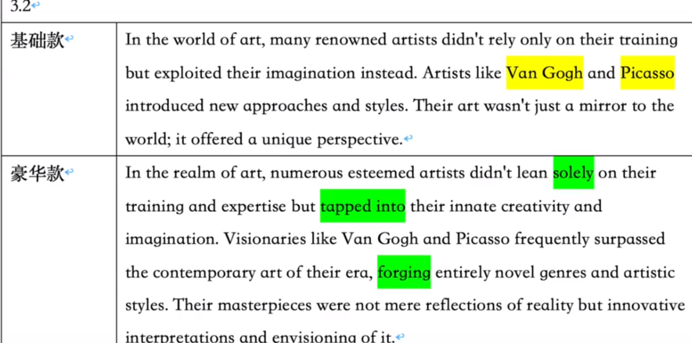
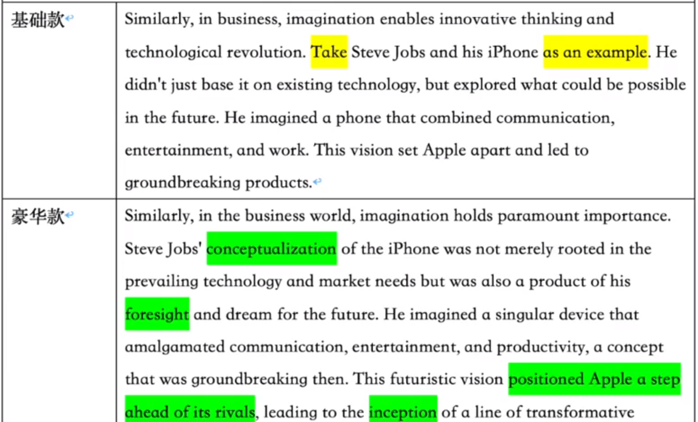
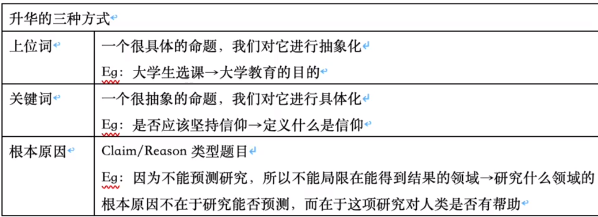
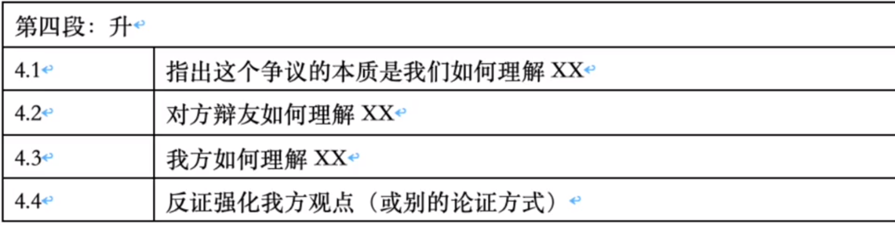
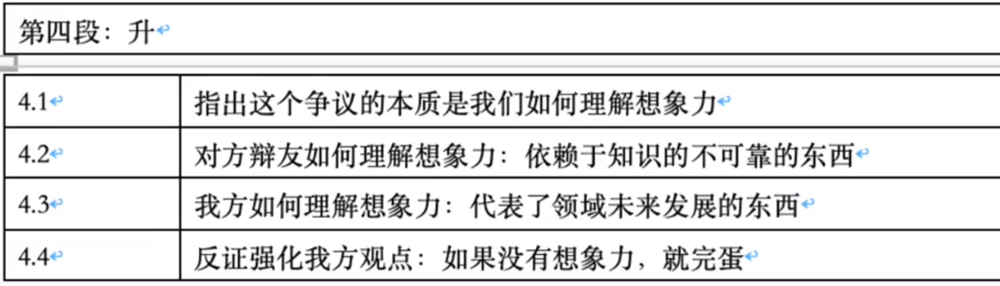
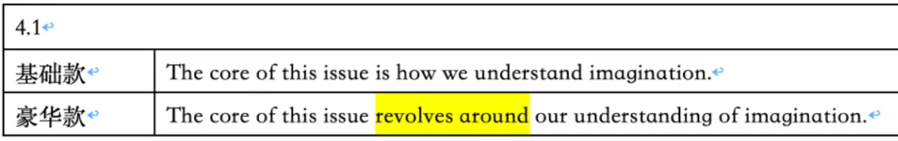
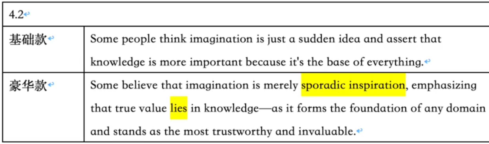
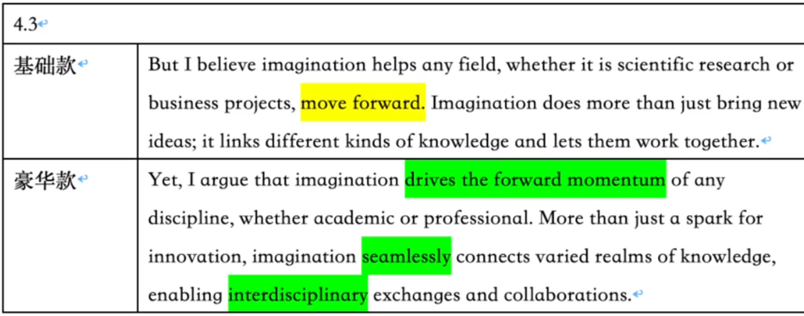
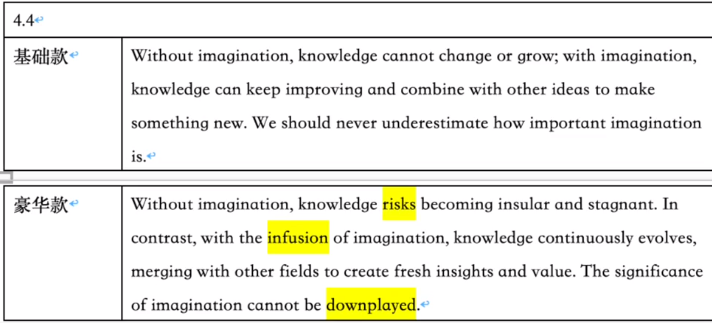
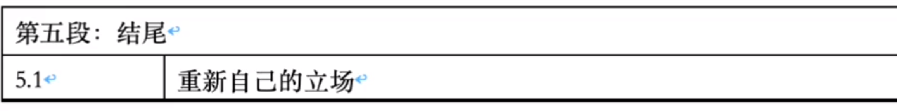
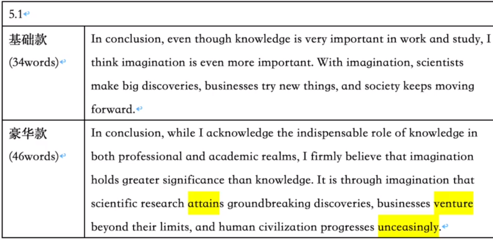
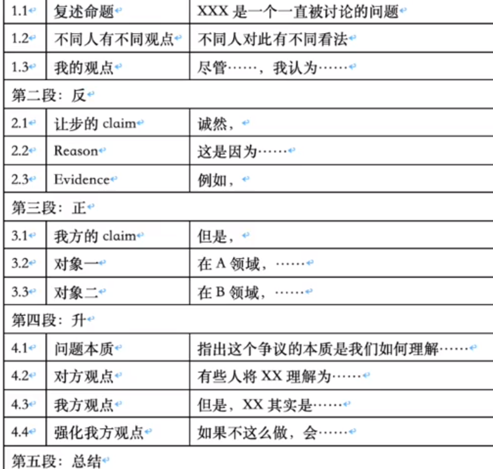
In most profession and academic fields, imagination is more important than knowledge.
In many jobs and research fields, people wonder if imagination is more important than knowledge. Different people have different opinions about this issue. As far as I am concerned, knowledge is important, but imagination is even more crucial in what we do.
It is true that knowledge is very important in many fields. Knowledge gives people the basic information they need to do their work well. Think about a scientist: before they can do new research or question old ideas, they need to know what has already been found out. This knowledge helps them do their work carefully, learn from past mistakes, and use what other have already learned. Without this basic knowledge, even big projects can fail because of small mistakes or misunderstandings.
However, it is our creativity and fresh thinking, rather than just our knowledge, that leads to significant discoveries. Imagination allows us to come up with ideas that are truly new. In the world of art, many renowned artists did not rely only on their training but exploited their imagination instead. Artists like Van Gogh and Picasso introduced new approaches and styles. Their art was not just a mirror to the world; it offered a unique perspective. Similarly, in the business world, imagination enables innovative thinking and technological revolution. Take Steve Jobs and his iPhone as an example. He did not just base it on existing technology, but explored what could be possible in the future. He imagined a phone that combined communication, entertainment, and work. This version set Apple apart and led to groundbreaking products.
The core of this issue is how we understand imagination. Some people think imagination is just a sudden idea and assert that knowledge is more important because it is the base of everything. But I believe imagination helps any field, whether it is scientific research or business project, move forward. Imagination does more than just bring new ideas; it links different kinds of knowledge and lets them work together. Without imagination, knowledge cannot change or grow; with imagination, knowledge can keep improving and combine with other ideas to make something new. We should never underestimate how important imagination is.
In conclusion, even though knowledge is very important in work and study, I think imagination is even more important. With imagination, scientists make big discoveries, businesses try new things, and society keeps moving forward.
在许多工作和研究领域中，人们常常思考一个问题：想象力是否比知识更重要。不同的人对此有不同的看法。就我而言，知识固然重要，但想象力在我们所做的事情中更为关键。
诚然，在许多领域，知识的重要性不言而喻。知识为人们提供了做好工作所需的基本信息。以科学家为例：在进行新研究或质疑旧观念之前，他们需要了解已经发现了什么。这种知识帮助他们谨慎地工作，从过去的错误中学习，并利用他人的研究成果。没有这些基本知识，即使是大型项目也可能因为小的错误或误解而失败。
然而，正是我们的创造力和创新思维，而不仅仅是知识，引导我们取得重大发现。想象力使我们能够想出真正新颖的想法。在艺术界，许多著名艺术家并不仅仅依靠他们的训练，而是发挥了他们的想象力。像梵高和毕加索这样的艺术家引入了新的方法和风格。他们的艺术作品不仅仅反映了世界，还提供了一种独特的视角。同样，在商业世界中，想象力激发了创新思维和技术革命。以史蒂夫·乔布斯和他的iPhone为例。他不仅仅基于现有技术，而是探索未来可能实现的事情。他想象一种将通信、娱乐和工作结合在一起的手机。这一理念使苹果与众不同，并推动了开创性产品的诞生。
这个问题的核心在于我们如何理解想象力。有些人认为想象力只是一个突然的想法，并断言知识更重要，因为它是万物的基础。但我相信，想象力有助于任何领域的发展，无论是科学研究还是商业项目。想象力不仅仅带来新想法，它还连接不同类型的知识，使它们共同工作。没有想象力，知识无法改变或成长；有了想象力，知识可以不断改进，并结合其他想法创造出新的东西。我们绝不能低估想象力的重要性。
总之，尽管知识和工作中非常重要，但我认为想象力更为关键。有了想象力，科学家可以取得重大发现，企业可以尝试新事物，社会可以不断进步。
In numerous professional and scholarly arenas, it is often debated whether imagination holds greater significance than knowledge. Individuals from diverse backgrounds often differ in their opinions on the roles of imagination and knowledge playing in our work and study. While I recognize the value of knowledge, I maintain that imagination more profoundly.
It is true that knowledge can be vital in various professional and academic settings. Knowledge provides a foundation upon which we build our understanding and expertise. It acts as the bedrock, equipping individuals with the essential tools and information to navigate their respective fields. Consider a scientist: before they can venture into groundbreaking research or challenge existing paradigms, they must first be well-versed in established theories, methodologies, and historical experiments of their discipline. This foundational knowledge ensures they approach their work with precision, avoiding pitfall and building upon the collective wisdom of those who came before them. Without such a solid base, even the most ambitious endeavors.
In many instances, however, it is imagination rather than prior knowledge that propels the significant advancement of humanity. Imagination unveils a plethora of possibilities, allowing us to transcend existing boundaries and conceive the unparalleled. In the realm of art, numerous esteemed artists did not lean solely on their training and expertise but tapped into their innate creativity and imagination. Visionaries like Van Gogh and Picasso frequently surpassed the contemporary art of their era, forging entirely novel genres and artistic styles. Their masterpiece were not mere reflections of reality but innovative interpretations and envisioning of it. Similarly, in the business world, imagination holds paramount importance. Steve Jobs’s conceptualization of the iPhone was not merely rooted in the prevailing technology and market needs but was also a product of his foresight and dream for the future. He imagined a singular device that amalgamated communication, entertainment, and productivity, a concept that was groundbreaking then. This futuristic vision positioned Apple a step ahead of its rivals, leading to the inception of a line of transformative.
The core of this issue revolves around our understand of imagination. Some believe that imagination is merely sporadic inspiration, emphasizing that true vales lies in knowledge-as it forms the foundation of any domain and stands as the most trustworthy and invaluable. Yet, I argue that imagination drives the forward momentum of any discipline, whether academic or professional. More than just a spark for innovation, imagination seamlessly connects varied realms of knowledge, enabling interdisciplinary exchanges and collaborations. Without imagination, knowledge risks becoming insular and stagnant. In contrast, with the infusion of imagination, knowledge continuously evolves, merging with other field to create fresh insights and value. The significance of imagination cannot be downplayed.
In conclusion, while I acknowledge the indispensable role of knowledge in both professional and academic realms, I firmly believe that imagination holds greater significance that knowledge. It is through imagination that scientific research attains groundbreaking discoveries, businesses venture beyond their limits, and human civilization progresses unceasingly.
在许多专业和学术领域，人们经常争论想象力是否比知识更重要。来自不同背景的个体在想象力和知识在我们的工作和学习中扮演的角色上往往有不同的看法。尽管我认识到知识的价值，但我坚持认为想象力更为深刻。
诚然，知识在多种专业和学术环境中可能至关重要。知识为我们提供了建立理解和专业知识的基石。它作为基础，为个人提供了导航各自领域所需的基本工具和信息。以科学家为例：在他们进行开创性研究或挑战现有范式之前，他们必须首先熟悉自己学科已建立的理论、方法学和历史实验。这一基础知识确保他们以精确的方式对待自己的工作，避免陷阱，并基于前人的集体智慧进行建设。没有这样的坚实基础，即使是雄心勃勃的事业也可能失败。
然而，在许多情况下，是想象力而不是先前知识推动了人类的重大进步。想象力揭示了无尽的可能性，使我们能够超越现有界限，构想出前所未有的东西。在艺术领域，许多杰出的艺术家并不仅仅依靠他们的训练和专业知识，而是挖掘了他们内在的创造力和想象力。像梵高和毕加索这样的远见者经常超越他们时代的当代艺术，创造了全新的艺术流派和风格。他们的杰作不仅仅是现实的反映，而是对现实创新性的解释和想象。同样，在商业世界中，想象力也极为重要。史蒂夫·乔布斯对iPhone的概念化并不仅仅基于现有技术和市场需求，也是他远见和未来梦想的产物。他想象出一个融合通信、娱乐和生产力于一体的单一设备，这个概念在当时是开创性的。这一未来主义的愿景使苹果领先于竞争对手，导致了变革性产品线的诞生。
这个问题的核心在于我们如何理解想象力。有些人认为想象力只是一种偶尔的灵感，强调真正的价值在于知识——因为它构成了任何领域的基石，并且是最值得信赖和宝贵的。然而，我认为想象力推动了任何学科的前进动力，无论是学术的还是专业的。想象力不仅仅是创新的火花，它还无缝地连接了不同的知识领域，使得跨学科的交流和合作成为可能。没有想象力，知识就有变得孤立和停滞的风险。相比之下，有了想象力的注入，知识不断进化，与其他领域融合创造出新的洞察和价值。想象力的意义不容小觑。
总之，虽然我承认知识在专业和学术领域中的不可或缺的作用，但我坚信想象力比知识更为重要。正是通过想象力，科学研究才能取得突破性的发现，企业才能超越自身的局限，人类文明才能不断进步。
提问：写作是否有人称的要求？之前雅思写作的时候一般用第三人称，最近在看老师列的高频题写作提纲里有一些第二人称。想请教下gre写作有没有相关的要求或建议～
没有强制要求 用第三人称写起来一般更方便更容易写得正式~
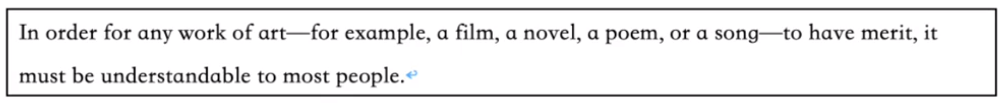
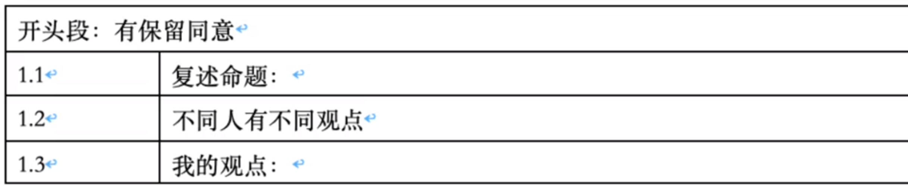
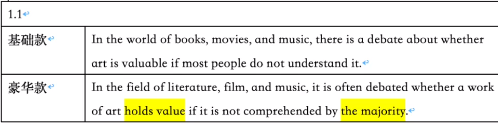
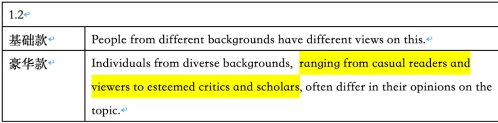
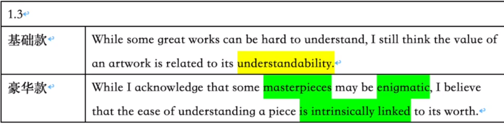
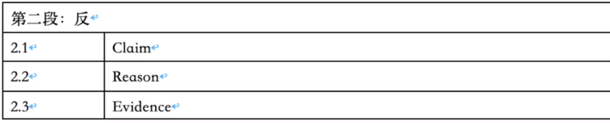
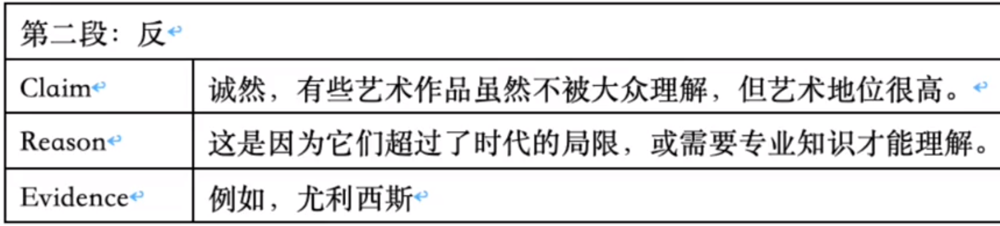
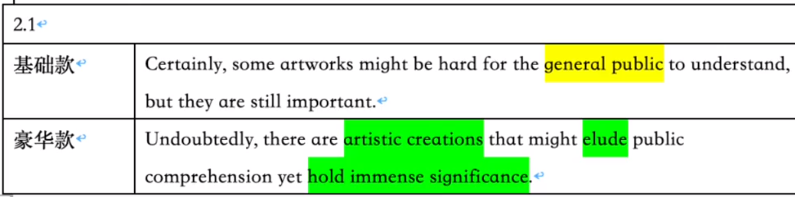
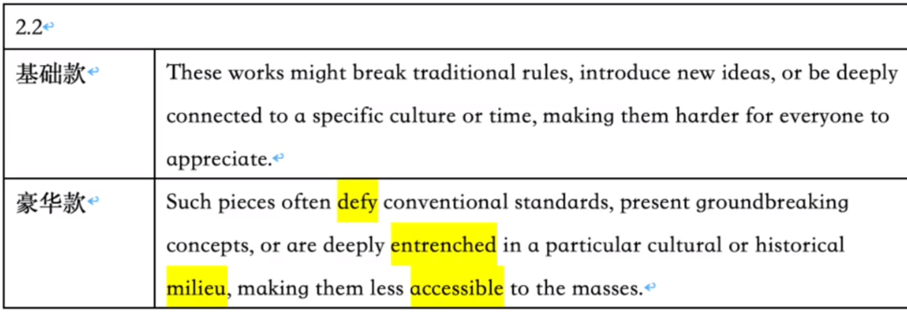
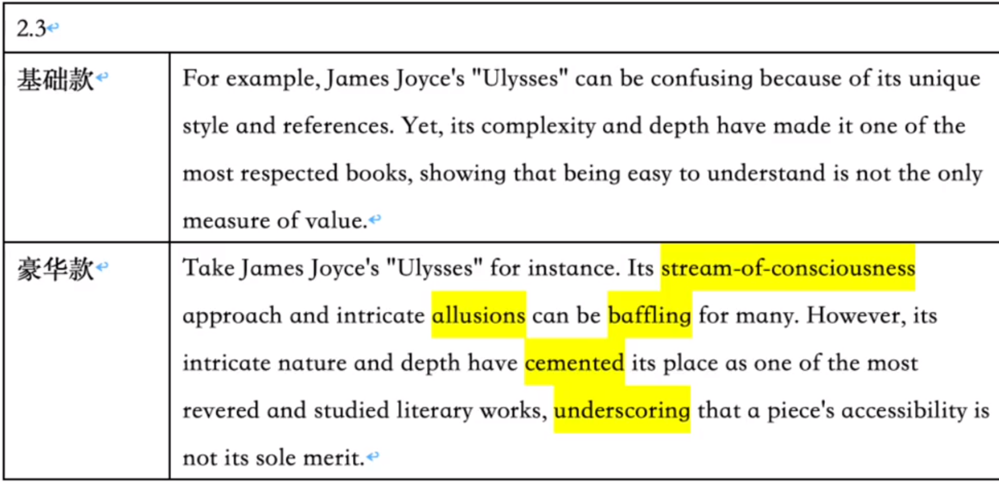
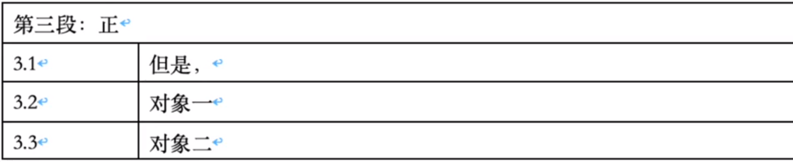
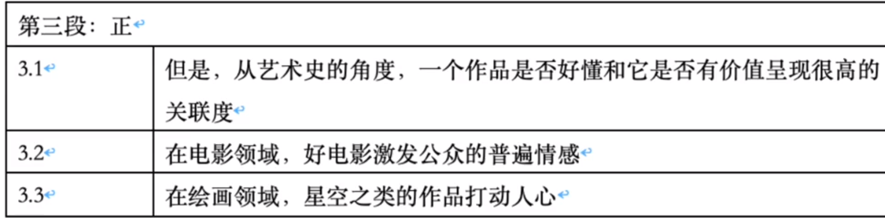
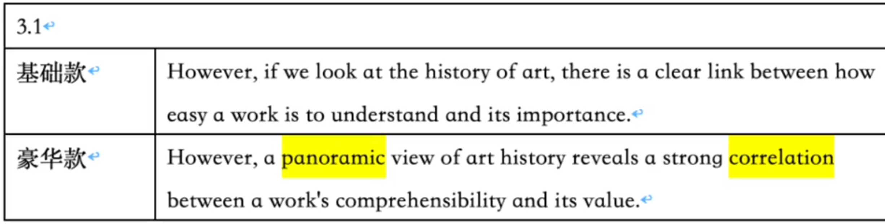
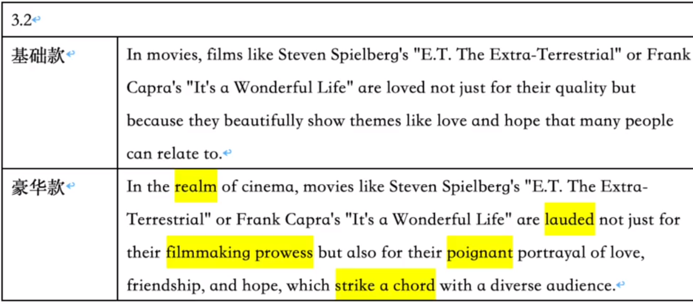
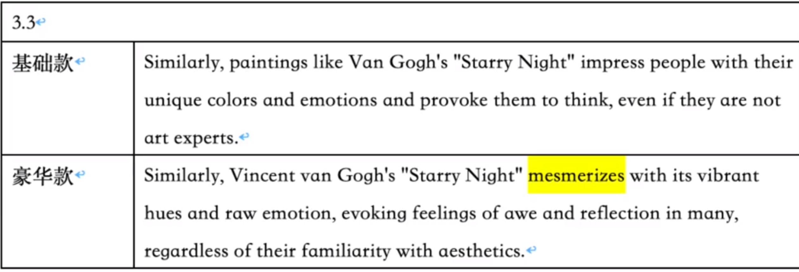
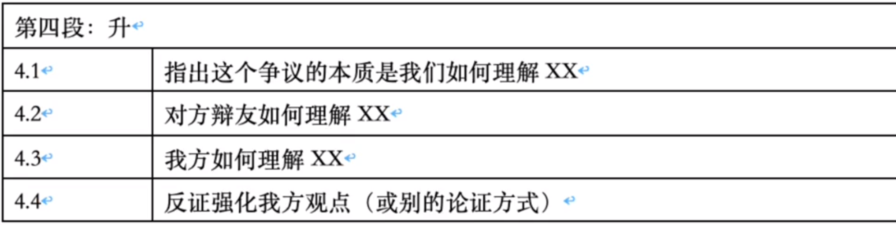
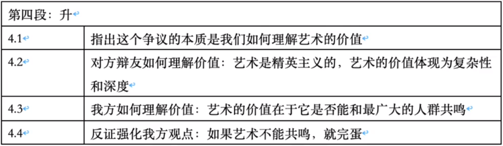
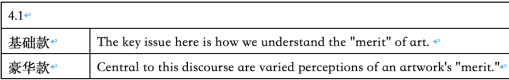
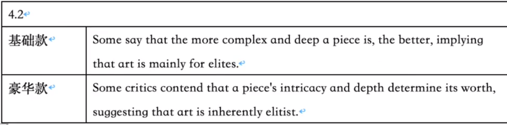
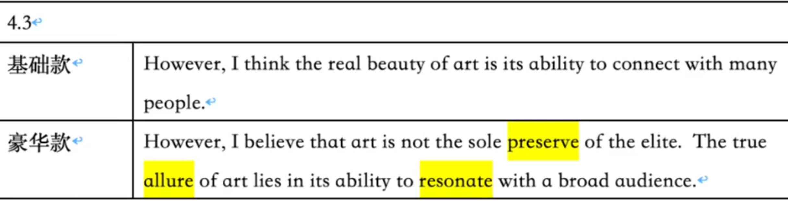
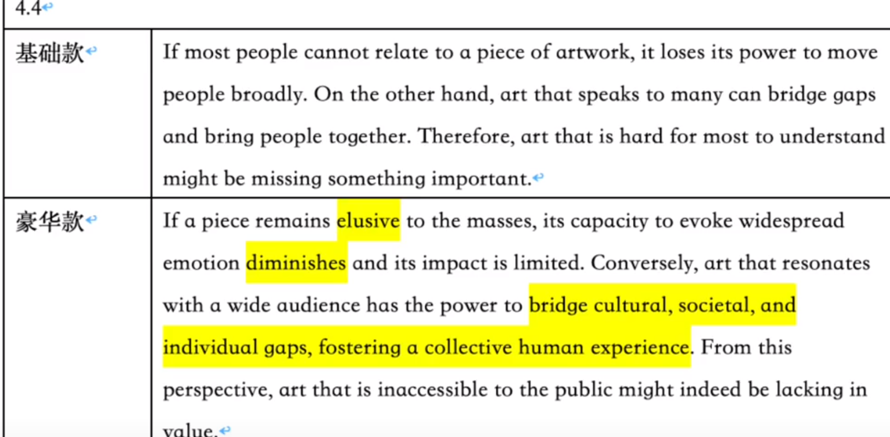
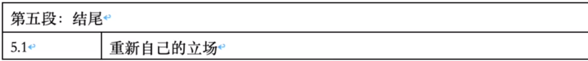
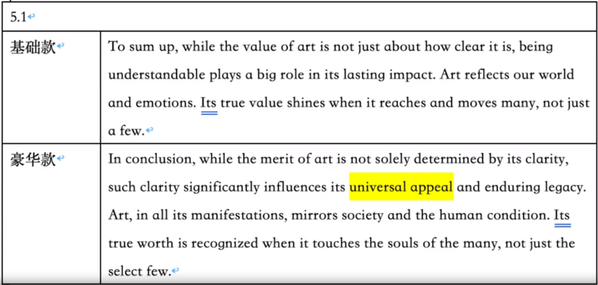
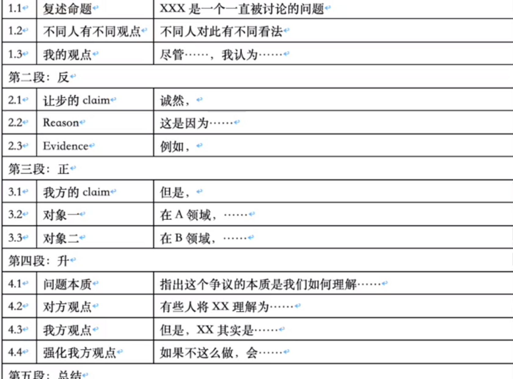
In order for any work of art-for example, a film, a novel, a poem, or a song-to have merit, it must be understandable to most people.
In the world of books, movies, and music, there is a debate about whether art is valuable if most people do not understand it. People from different backgrounds have different views on this. While some great works can be hard to understand, I still think the vales of an artwork is related to its understandability.
Certainly, some artworks might be hard for the general public to understand, but they are sill important. These works might break traditional rules, introduce new ideas, or be deeply connected to a specific culture or time, making them harder for everyone to appreciate. For example, James Joyce’s “Ulysses” can be confusing because of its unique style and references. Yet, its complexity and depth have made it one of the most respected books, showing that being easy to understand is not the only measure of value.
However, if we look at the history of art, there is a clear link between how easy a work is to understand and its importance. In movies, films like Steven Spielberg’s “E.T. The Extra-Terrestrial” or Frank Capra’s “It’s a Wonderful Life” are loved not just for their quality but because they beautiful show themes like love and hope that many people can relate to. Similarly, paintings like Van Gogh’s “starry Night” impress people with their unique colors and emotions and provoke them to think, even if they are not art experts.
The key issue here is how we understand the “merit” of art. Some say that the more complex and deep a piece is, the better, implying that art is mainly for elites. However, I think the real beauty of art is its ability to connect with many people. If most people cannot relate to a piece of artwork, it loses its power to move people broadly. On the other hand, art that speaks to many can bridge gaps and bring people together. Therefore, art that is hard for most to understand might be missing something important.
To sum up, while the value of art is not just about how clear it is, being understandable plays a big role in its lasting impact. Art reflects out world and emotions. Its true value shines when it reaches and moves many, not just a few.
All college and university students would benefit from spending at least one semester studying in a foreign country.
Write a response in which you discuss the extent to which you agree or disagree with the statement and explain your reasoning for the position you take. In developing and supporting your position, you should consider ways in which the statement might or might not hold true and explain how these considerations shape your position.
Whether students in colleges and universities would benefit from at least one semester studying in a foreign country has been a hot topic today. While some argue that in the present and future, everybody has more chance to have a life experience in other country than ever before, which absolutely would bring a lot of benefits to students. However, I hold the opposite view that students should devote themselves in their own major, believing that studying in other country is a kind of wasting time and money.
It is true that since the rapid development of economy and transportation, almost every person get the chance to have an experience in other countries. Someone believes that students in colleges and universities, if they spend at least one semester in a foreign country, will develop their ability to live independently in a foreign country while understanding how society works in other countries which will helps them get a better understanding of the world and have a clearer picture of their own life.
As far as I concerned, students who want to have abroad learning life is about to face thousands of problems, Such as the limited time and the lack of financial support. On the one hand, in today's era of industrialization, every subject, even the humanities, has a huge knowledge hierarchy which consists massive knowledge that students can hardly acquire most of them without doubt. In this circumstance, it is widely regarded unwise to spend one semester, sometimes even more, in an unfamiliar country because as students, they should take the completion of the study of professional knowledge as the most important task. On the other hand, the source of money supporting this journey is also a big trouble. Students from poor family have to support themselves, both tuition and living expenses, surely having less chance to learning outside compared with the rich, which is going to widen the gap between the rich and the poor.
The core of this issue is how we understand the true meaning of benefit. Some people think the life in a new country getting connection with different people in different language is helpful to students’ growth process. But I believe that compared with life in a foreign country, facing a lot of problem in the shortage of time and money sometimes with inefficient learning style, studying in the campus is a much better way to bring benefits to students, because their ultimate goal is learning useful expertise.
In conclusion, even though the abroad studying life may bring some advantage to students, I think the easiest way, learning their major in a familiar campus and environment, is sure to benefit students most.
在大学和大学中，学生们是否应该至少花一个学期去国外学习，已经成为一个热门话题。有人认为，在现在和将来，每个人都有比以往任何时候都更多的机会在其他国家生活，这无疑会给学生带来很多好处。然而，我持相反的观点，认为学生应该专心致志于自己的专业，认为去其他国家学习是一种浪费时间和金钱的行为。
诚然，由于经济和交通的快速发展，几乎每个人都有机会在其他国家体验生活。有人认为，如果大学生在国外学习至少一个学期，他们将培养出在外国独立生活的能力，并了解其他国家的社會运作方式，这将帮助他们更好地理解世界，对他们的生活有更清晰的认识。
在我看来，想要出国留学的学生将要面临诸多问题，如有限的时间和资金支持的不足。一方面，在当今的工业化时代，每个学科，甚至人文学科，都有一个巨大的知识层次结构，其中包含大量的知识，学生无疑很难掌握其中大部分。在这种情况下，花一个学期，有时甚至更多，在一个不熟悉的国家，被广泛认为是愚蠢的，因为学生应该把完成专业知识的学习作为最重要的任务。另一方面，支持这次旅行所需的资金来源也是一个大问题。来自贫困家庭的学生必须自己负担学费和生活费，与富人相比，他们肯定有更少的机会去外面学习，这将扩大贫富之间的差距。
这个问题的核心在于我们如何理解“好处”的真正含义。有些人认为，在新国家生活，与说不同语言的不同人建立联系，对学生的成长过程有帮助。但我相信，与在国外生活相比，面对时间和资金的短缺，有时还伴随着低效的学习方式，校园学习是给学生带来更多好处的更好方式，因为他们的最终目标是学习有用的专业知识。
总的来说，尽管留学生活可能会给学生带来一些优势，但我觉得最容易的方式，在一个熟悉的校园和环境里学习他们的专业，肯定是最能给学生带来好处的。
The question of whether college students should spend at least one semester studying abroad has sparked a heated debate. Proponents argue that in our increasingly globalized world, the opportunity to live and study in a foreign country can provide invaluable life experiences and broadened horizons. However, I respectfully disagree. I believe that students should focus their time and resources on their academic pursuits at home, as studying abroad can be both a financial and temporal drain（使人疲倦的事物，负担）.
It is undeniable that modern advancements in economy and transportation have made international experiences more accessible than ever before. Advocates suggest that such experiences can foster independence and a deeper understanding of different societies, enhancing one's world perspective and self-awareness. While these are laudable goals, the reality is that embarking on such a journey is not without its challenges.
For one, the academic demands of today's educational landscape are rigorous and specialized. Every field of study, including the humanities, is built upon a vast foundation of knowledge that requires considerable time and effort to master. The idea of deviating from this path for a semester or more, especially in an unfamiliar environment, could impede the acquisition of critical skills and expertise. Students have a finite window to solidify their academic foundation, and it is widely believed that devoting this precious time to their studies at home is a wiser choice.
Moreover, financial constraints present a significant barrier for many students. The costs associated with studying abroad, including tuition, accommodation, and travel, can be prohibitive for those from less affluent backgrounds. This creates an unfortunate disparity between students who can afford such experiences and those who cannot, potentially exacerbating the wealth gap within academic circles.
At the heart of this issue lies a fundamental question: what constitutes a true benefit in education? While some argue that the cultural immersion and language acquisition that come with living abroad are integral to personal growth, I contend that these benefits can be attained through other, more practical means. Engaging with diverse communities at home, for instance, or participating in language exchange programs can offer similar rewards without the same level of disruption to one's academic progress.
In conclusion, while studying abroad may offer certain advantages, I believe that the most effective path to educational benefit lies in a student's focused dedication to their studies within the familiar environs of their home campus. Here, they can concentrate on mastering their chosen field, free from the distractions and financial burdens that can accompany an overseas semester. In doing so, students can ensure that their education is both efficient and impactful, equipping them with the expertise they need to succeed in an increasingly competitive world.
关于大学生是否应该至少花一个学期到国外学习的问题引发了激烈的争论。支持者认为，在我们这个日益全球化的世界里，到外国生活和学习的机会可以提供宝贵的人生经历和开阔的视野。然而，我却不敢苟同。我认为，学生应该把时间和资源集中在国内的学业上，因为出国留学会耗费财力和时间。
不可否认的是，现代经济和交通的进步使得国际经验比以往任何时候都更容易获得。倡导者认为，这种经历可以培养学生的独立性，加深他们对不同社会的了解，增强他们的世界观和自我意识。虽然这些目标值得称赞，但现实是，踏上这样的旅程并非没有挑战。
首先，当今教育领域的学术要求严格而专业。每个学科领域，包括人文学科，都建立在广博的知识基础之上，需要花费大量的时间和精力才能掌握。在一个学期或更长的时间里，尤其是在一个陌生的环境中，偏离这条道路的想法可能会阻碍关键技能和专业知识的掌握。学生们只有有限的时间来巩固自己的学业基础，而人们普遍认为，将这宝贵的时间用于在家学习是更明智的选择。
此外，经济拮据也是许多学生的一大障碍。出国留学的相关费用，包括学费、住宿费和旅费，可能会让那些家境不富裕的学生望而却步。这就造成了有经济能力的学生与没有经济能力的学生之间的差距，有可能加剧学术界的贫富差距。
这个问题的核心在于一个根本性的问题：什么才是真正的教育福利？有些人认为，海外生活带来的文化熏陶和语言习得是个人成长不可或缺的一部分，但我认为，这些好处可以通过其他更实际的途径来实现。例如，在国内与不同的社区接触，或者参加语言交流项目，都能带来类似的收获，而不会对个人的学业进度造成同样程度的干扰。
总之，虽然出国留学可能会带来某些优势，但我认为，获得教育收益的最有效途径在于学生在自己熟悉的校园环境中专心致志地学习。在这里，他们可以专心致志地掌握自己所选择的专业，而不会受到海外学期的干扰和经济负担的影响。这样，学生就能确保他们的教育既高效又有影响力，使他们具备在竞争日益激烈的世界中取得成功所需的专业知识。
True success can be measured primarily in terms of the goals one sets for oneself.
Write a response in which you discuss the extent to which you agree or disagree with the statement and explain your reasoning for the position you take. In developing and supporting your position, you should consider ways in which the statement might or might not hold true and explain how these considerations shape your position.
The question of whether true success can be measured primarily in terms of the goals one sets for oneself has sparked a heated debate. Proponents argue that regarding success as a matter of personal growth process, true success can be measured primarily on the goals one set for himself or herself. However, I respectfully disagree. I believe that true success benefits both single person and society.
First of all, it is recognized that there is some validity in evaluating success according to personal goals which keep us moving forward and give us direction in our lives. When we achieve one goal after another, we feel satisfied and proud, and this satisfaction and pride is a significant part of success. From this perspective, personal goals are indeed an important measure of success.
However, I believe that success can be evaluated not only in terms of one's previously set goals, but also in terms of one's contribution to society collectively. A person's success is limited if he or she only achieves his or her goals without contributing anything to society. True success should be achieving one's personal goals while at the same time is good for society. For example, a famous Chinese businessman named Ma Yun, who set a almost unachievable target for himself that he was going to start up a business, aiming to make it much easier to do business in China. More than ten years have passed and the e-commerce platform he built has benefit so many small and medium-sized enterprise. Even though Ma Yun still not says that he has realized the goal he made long time ago, in fact many people have benefited from his company, which can be regarded as a true success without any doubts.
At the heart of this issue lies a fundamental question: what is the true success? While many may bind personal development to true success, thinking that making a lot of money or getting better grades in school or something else that bring advantages to themselves is true success, I believe a person's success is one-sided if he only achieves his goals but neglects his social responsibilities. True success should be an all-round success that includes both personal achievements and contributions to society and it should be the pursuit of personal goals while at the same time assuming social responsibility and contributing to society.
In conclusion, while true success actually is one part of personal goals, it indeed includes something more. True success can be helpful to others, or if bigger, promote social progress.
真正的成功是否主要可以用一个人为自己设定的目标来衡量，这个问题引发了激烈的争论。支持者认为，成功是一个个人成长过程的问题，真正的成功主要可以用一个人为自己设定的目标来衡量。然而，我却不敢苟同。我认为，真正的成功既有利于个人，也有利于社会。
首先，我们承认，根据个人目标来评价成功是有一定道理的，这些目标使我们不断前进，并为我们的生活指明方向。当我们实现一个又一个目标时，我们会感到满足和自豪，这种满足和自豪是成功的重要组成部分。从这个角度看，个人目标的确是衡量成功的一个重要标准。
然而，我认为，成功不仅可以从个人先前设定的目标来评价，还可以从个人对社会的集体贡献来评价。如果一个人只实现了自己的目标，却没有为社会做出任何贡献，那么他的成功是有限的。真正的成功应该是在实现个人目标的同时对社会有益。例如，中国有一位著名的商人叫马云，他给自己定了一个几乎无法实现的目标：他要创业，目的是让在中国做生意变得更容易。十多年过去了，他建立的电子商务平台已经造福了众多中小企业。尽管马云还没有说他已经实现了自己很久以前制定的目标，但事实上，很多人已经从他的公司中受益，这可以毫无疑问地被视为真正的成功。
这个问题的核心在于一个根本性的问题：什么是真正的成功？很多人可能会把个人发展与真正的成功捆绑在一起，认为赚了很多钱、学习成绩好了或其他能给自己带来好处的事情就是真正的成功，但我认为，如果一个人只实现了自己的目标，却忽视了自己的社会责任，那么他的成功就是片面的。真正的成功应该是一种全面的成功，既包括个人的成就，也包括对社会的贡献，应该是在追求个人目标的同时，承担社会责任，为社会做出贡献。
总之，真正的成功实际上是个人目标的一部分，但它确实还包括更多的东西。真正的成功可以帮助他人，如果做得更大，还可以促进社会进步。
The debate over whether true success is primarily measured by the goals one sets for oneself is a contentious one. Advocates suggest that success is a reflection of personal growth and can be gauged mainly by the objectives we set for ourselves. However, I must dissent from this view. I am of the opinion that genuine success encompasses not only individual aspirations but also benefits the larger society.
To begin with, it is undeniable that there is value in assessing success against the backdrop of personal goals. These goals are the driving force that propels us forward and provides us with a sense of direction. The fulfillment and pride derived from achieving these milestones are indeed integral to our perception of success. From this standpoint, personal goals do serve as a significant criterion for measuring success.
Nonetheless, I contend that success should not be evaluated solely based on one's self-determined goals. It should also be judged by the degree to which an individual contributes to the collective good. A person's achievements are somewhat hollow if they do not transcend personal ambition and positively impact society. True success, then, is about achieving personal goals while simultaneously enriching the lives of others. For instance, consider Elon Musk, who set ambitious goals to revolutionize both the automotive and space industries. His successes with Tesla and SpaceX have not only realized personal ambitions but have also pushed the boundaries of technology and sustainability, benefiting society at large.
The crux of the matter lies in our definition of true success. While many equate it with personal development, such as financial gain or academic achievements, I argue that success is incomplete if it is pursued in isolation from societal responsibilities. True success is multifaceted; it encompasses personal achievements and contributions to the common good. It involves the pursuit of individual aspirations while also taking on the mantle of social responsibility and making a positive impact on the world.
In essence, true success is not confined to the fulfillment of personal goals. It transcends individual achievements to make a meaningful difference in the lives of others and, on a grander scale, to advance the progress of society. When we broaden our definition of success to include these external markers, we recognize that our actions and accomplishments have the potential to create a ripple effect, touching lives and inspiring change beyond our own.
In conclusion, while personal goals are indeed a component of true success, they are not the sole measure. True success is multifaceted and extends beyond individual ambitions to include contributions to the greater good. It is this holistic approach to success that we should strive for, one that enriches both the individual and society as a whole.
关于 “真正的成功是否主要通过为自己设定的目标来衡量 ”的争论颇具争议。支持者认为，成功是个人成长的反映，主要可以通过我们为自己设定的目标来衡量。然而，我必须反对这种观点。我认为，真正的成功不仅包括个人的愿望，而且还造福于整个社会。
首先，不可否认，以个人目标为背景来评估成功是有价值的。这些目标是推动我们前进的动力，为我们提供了方向感。实现这些里程碑式的目标所带来的成就感和自豪感，的确是我们对成功的看法中不可或缺的一部分。从这个角度来看，个人目标的确是衡量成功的一个重要标准。
然而，我认为，评价成功与否，不应只看个人自定的目标。它还应根据个人对集体利益的贡献程度来评判。如果一个人的成就不能超越个人野心，不能对社会产生积极影响，那么他的成就在某种程度上就是空洞的。因此，真正的成功是在实现个人目标的同时丰富他人的生活。举例来说，埃隆-马斯克（Elon Musk）设定了宏大的目标，要彻底改变汽车和太空产业。他在特斯拉和 SpaceX 的成功不仅实现了个人抱负，还推动了技术和可持续发展的发展，造福了整个社会。
问题的关键在于我们对真正成功的定义。虽然许多人将成功等同于个人发展，如经济收益或学术成就，但我认为，如果脱离社会责任去追求成功，那是不完整的。真正的成功是多方面的；它既包括个人成就，也包括对共同利益的贡献。它既包括追求个人理想，也包括承担社会责任，对世界产生积极影响。
从本质上讲，真正的成功并不局限于实现个人目标。它超越个人成就，为他人的生活带来有意义的改变，并在更大范围内推动社会进步。当我们把成功的定义扩大到包括这些外部标志时，我们就会认识到，我们的行动和成就有可能产生涟漪效应，触动他人的生活，激发超越我们自身的变革。
总之，虽然个人目标确实是真正成功的一个组成部分，但并不是唯一的衡量标准。真正的成功是多方面的，超越了个人的抱负，还包括对更大利益的贡献。我们应该努力追求的正是这种全面的成功方法，它既能丰富个人，也能丰富整个社会。
请你修改这篇文章，删除不合理的表达使之更加流畅地道，更加符合英语母语者的表达方式，可以添加更多的细节，使文章字数更多
假设你是一名GRE写作部分的考官，你负责批阅考生issue写作部分。
以下是一篇考生的issue文章{
}
请你从以下方面指出这篇issue中的错误和不合适的表达：
单词拼写错误
语法错误
动词使用错误
逻辑表达问题，例如不连续的表达，过于重复的表达
基于上述评分标准，请你给这篇issue打分。
同时请修改这篇issue：
修改文章中的各种错误
调整文章中过于重复的部分
修改部分句子的语法表达使之更加符合native speaker的风格。
请给出修改之后的范文。
再次重复你要做三个的事情：
指出各类问题
打分
修改原文，输出范文
假设你是一名GRE写作部分的考官，你负责批阅考生issue写作部分。
以下是一篇考生的issue文章{
}
请修改这篇issue：
修改文章中的各种错误
调整文章中过于重复的部分
修改部分句子的语法表达使之更加符合native speaker的风格。
请给出修改之后的范文。
便利
communication channels
remove typical financial, and time constraints that hinder potential learners
network with peers from all over the work
减轻教育的不公平
bridge the gap in education
share the same curriculum, teachers, and textbooks
break the cycle of poverty
终身学习
lifelong learning
兴趣是最好的老师
interest is the best teacher
挑战现状
challenge the status quo and think differently
refuse to follow along and engage in herd behavior
学历不代表一切
it is not the degree but the knowledge that makes a person smart
drop out of university; Bill Gates; Mark Zuckerberg
Plato: each individual should develop his or her ability to the fullest（完人教育）
Benjamin Franklin: An investment in knowledge pays the best interest
Jobs: Stay hungry, stay foolish
=lunar landing mission
科技进步对人类的影响
That is one small step for man, one giant leap for mankind.
钱花得值不值
shortsighted
desire to explore and challenge the boundaries of what know
expand technology, create new industries, and foster a peaceful connection with other nations (the international space station)
advantage:
tansgenic crop allowed an average increase in agriculral yield 22% and increase farmers' profits by 68%
disadvantage:
broke the rules to create the first gene-edited babies
extremely unethical
双刃剑
a double-edged sword
the government must take a more active role in regulating the high-tech firms and labs
工具
teach machines to learn concepts and techniques the way human do
超越
Alpha-go Zero, was completely self-taught without learning from human games
可以共处
machine evolves to help human, not to replace human
technology should improve your life, not become your life
Lenoardo da Vinci
Michelangelo
Raphael
capture the experience of the individual and the beauty of the natural world
the development of technologies was accompanied by a flowering of philosophy, literature and especially art.
Van Gogh was not a product of the environment
educated or uneducated; art is nmot necessarily for elites
mimic (X), reconsideration and reconstruction
art is nor necessarily for comprehension
No good building without a good foundation. Successful innovation in art is not the luck of random insights, but rather the result of a deliberate process.
Everything you can imagine is real.
只要提到环保和生态就直接支持即可，比较方便行文
a critical link in the food chain
there is the potential for a domino effect
poor air quality, noise pollution, light pollution; stay healthy physcially and mentally
the links between the ecnonomy and the environment are manifold: the environment provides resources to the economy, but poor environment quality in turn affects economic growth and wellbeing
call for a transformation to a green economy which is in line with nature and the environment.
防患于未然：An ounce of prevention is worth a pound of cure
Earth provides enough to satisfy every man's needs, but not everyone's greed
Clinton presided over the longest period of peacetime economic expansion in American history.
But his sexual scandal with Monica Lewinsky ruined his reputation
declamation of emancipation; he was pulling the whole nation to recognize the human in a better way
we surround ourselves with different people who hold different views
decidate his life to a great cause
we change our minds all the time
The Nazi regime was responsible for the genocide of about 6 million Jews and millions of other victims
Hitler achieved full control over the legestiative and exectutive branches of government
Lookers-on see more than players.
Man heads are better than one == Many hands make quick work